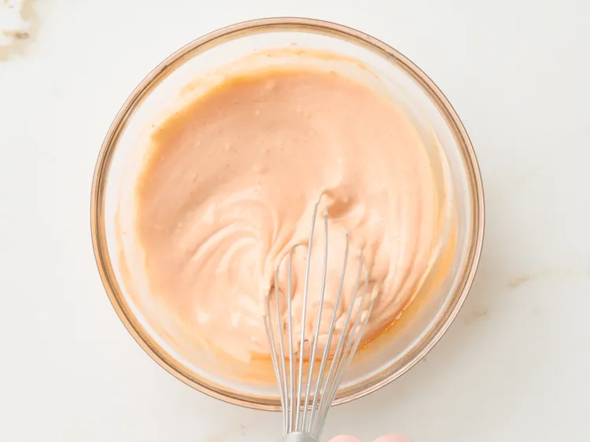
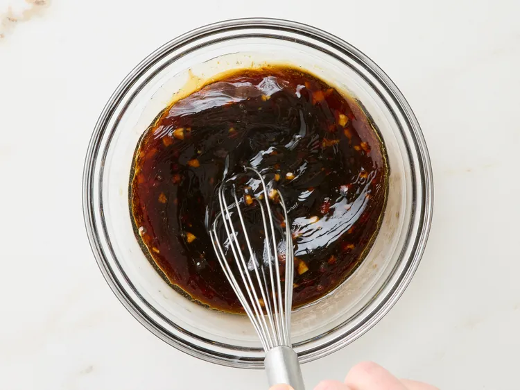
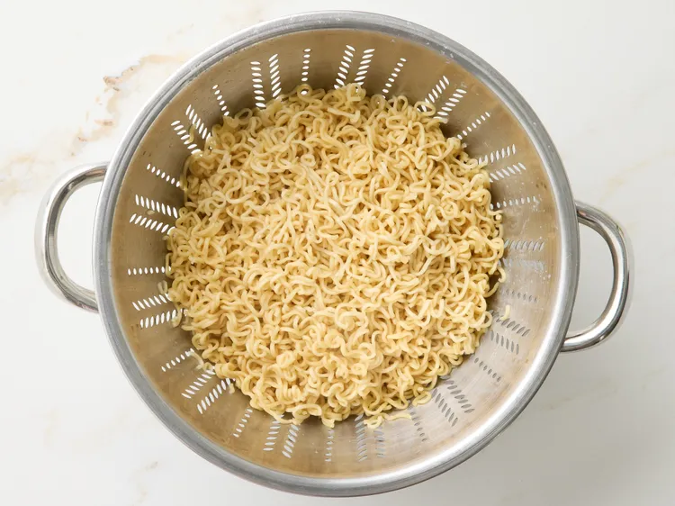
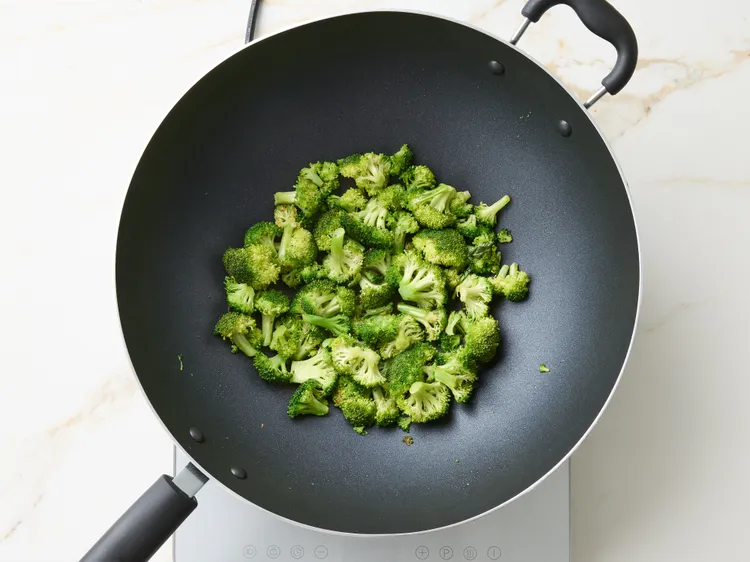
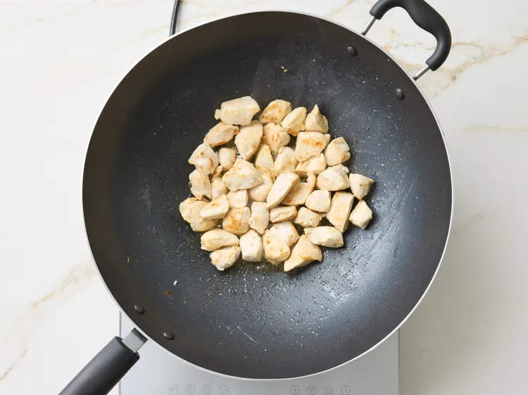
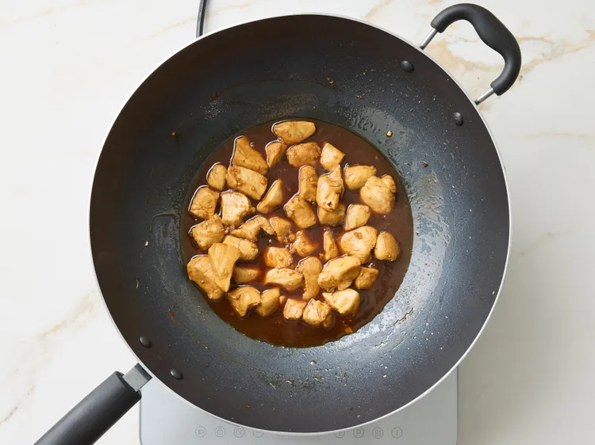
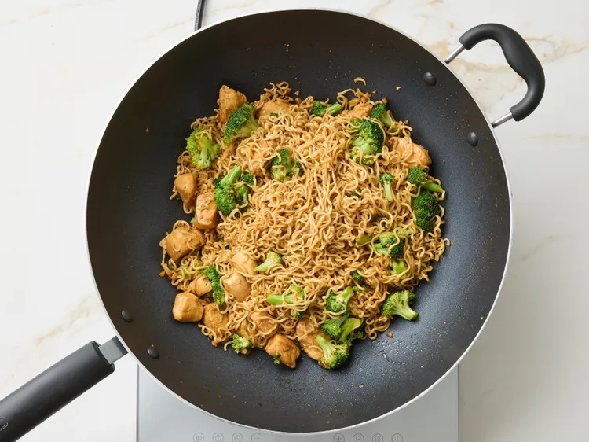
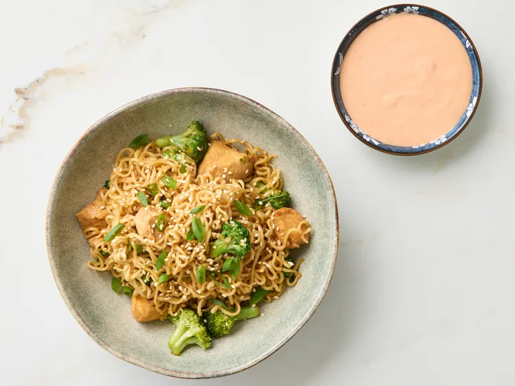

Hibachi Chicken Noodles with Yum Yum Sauce is a flavorful, restaurant-style dish that brings the excitement of
Japanese teppanyaki cooking right into your kitchen. Tender pieces of chicken are seared to perfection and tossed
with stir-fried noodles, crisp vegetables, and a savory blend of soy sauce, garlic, and butter. The dish is known
for its rich umami taste, slightly smoky aroma, and satisfying texture that combines juicy protein with perfectly
cooked noodles.
Ingredients
Yum Yum Sauce
1/3 cup mayonnaise
1 tablespoon Sriracha sauce
1 tablespoon ketchup
1 tablespoon rice vinegar
1 teaspoon granulated sugar
1/2 teaspoon garlic powder
1/4 teaspoon salt
Chicken and Noodles
1/2 cup reduced-sodium soy sauce
2 tablespoons packed brown sugar
2 tablespoons toasted sesame oil
2 tablespoons water
4 cloves garlic, minced
2 tablespoons vegetable oil
3 cups broccoli florets
3 tablespoons butter
1 pound boneless skinless chicken breasts, cut into 1/2-inch pieces
Whisk together mayonnaise, Sriracha, ketchup, rice vinegar, sugar, garlic powder, and salt for the Yum Yum Sauce
in a small bowl until smooth and well combined. Cover and refrigerate until ready to use.

credit: Photographer: Jacob Fox / Food Styling: Shannon Goforth / Prop Styling: Kristen Schooley
Whisk together soy sauce, brown sugar, sesame oil, water, and garlic in a bowl; set aside.

credit: Photographer: Jacob Fox / Food Styling: Shannon Goforth / Prop Styling: Kristen Schooley
Bring a large saucepan of water to a boil over medium-high heat. Add yakisoba noodles and cook for 1 minute. Drain
and set aside to cool slightly.

credit: Photographer: Jacob Fox / Food Styling: Shannon Goforth / Prop Styling: Kristen Schooley
Heat oil in a wok or large skillet over medium-high heat. Add broccoli and cook until softened and lightly
browned, 3 to 4 minutes. Remove from wok using a slotted spoon and set aside.

credit: Photographer: Jacob Fox / Food Styling: Shannon Goforth / Prop Styling: Kristen Schooley
Add butter to the wok. When melted, add chicken in a single layer, working in two batches if necessary. Cook until
lightly browned on all sides and cooked through (an instant-read thermometer inserted into the thickest part
should read at least 165 degrees F (74 degrees C)), about 5 minutes per batch.

credit: Photographer: Jacob Fox / Food Styling: Shannon Goforth / Prop Styling: Kristen Schooley
Pour in soy sauce mixture. Let mixture come to a simmer, and cook until sauce has slightly thickened, about 5
minutes.

credit: Photographer: Jacob Fox / Food Styling: Shannon Goforth / Prop Styling: Kristen Schooley
Add broccoli and noodles to the wok. Toss until everything is evenly coated in sauce and heated through.

credit: Photographer: Jacob Fox / Food Styling: Shannon Goforth / Prop Styling: Kristen Schooley
Garnish with green onions and sesame seeds. Serve with Yum Yum sauce.

credit: Photographer: Jacob Fox / Food Styling: Shannon Goforth / Prop Styling: Kristen Schooley